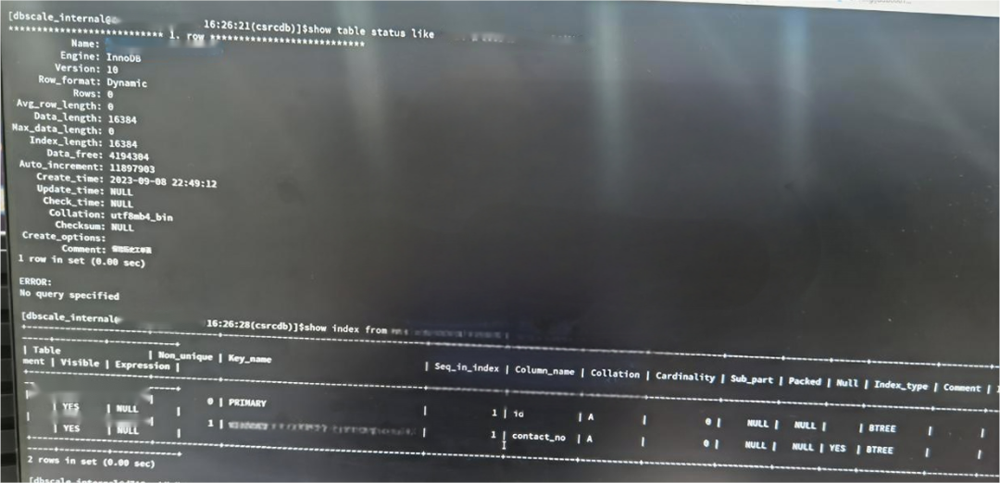
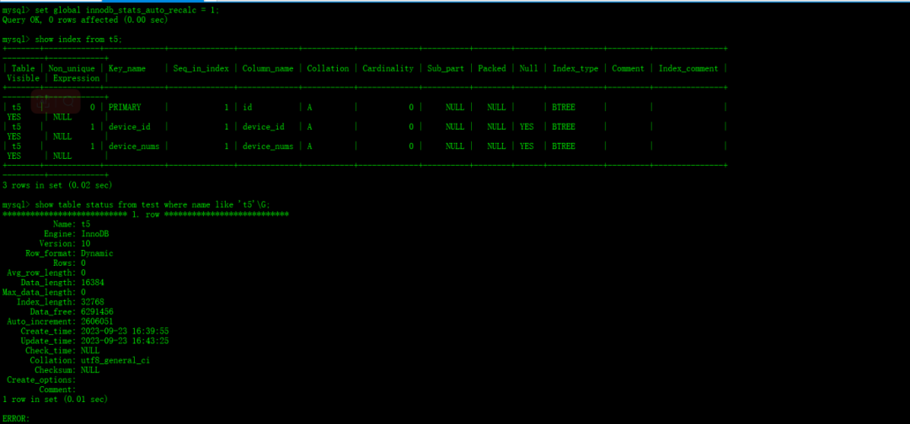
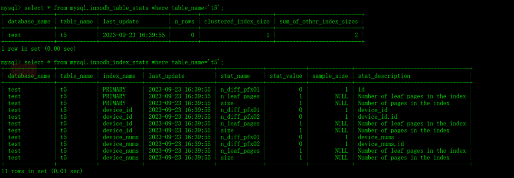
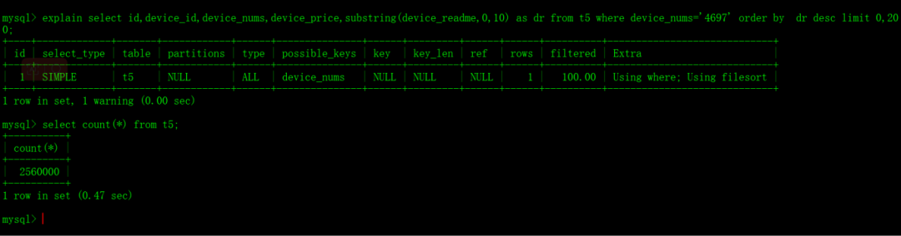
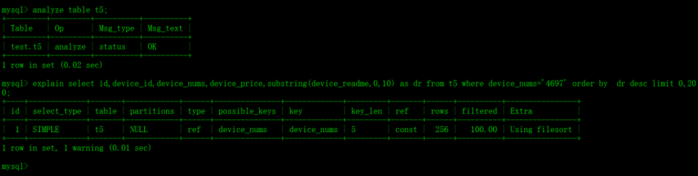

包拯断案 | 数据库CPU突然飙升 怎么破@还故障一个真相
心中有章，遇事不慌
作为DBA的你，遇到问题无从下手，除了在问题面前徘徊，还能如何选择？如果你一次或多次遇到该问题还是无法解决，又很懊恼，该如何排忧呢？关注公众号，关注《包拯断案》专栏，让小编为你排忧解难~
#包拯秘籍#
一整套故障排错及应对策略送给你，让你像包拯一样断案如神：
#首先
遇到此类问题后，我们要做到心中有章（章程），遇事不慌。一定要冷静，仔细了解故障现象（与研发/用户仔细沟通其反馈的问题，了解故障现象、操作流程、数据库架构等信息）
#其次
我们要根据故障现象进行初步分析。心中要想：是什么原因导致数据库CPU资源占用量突然大幅增加？例如：是高耗时的SQL，还是查询未使用索引？
#然后
针对上述思考，我们需要逐步验证并排除，确定问题排查方向。
#接着
确定了问题方向，进行具体分析。通过现象得出部分结论，通过部分结论继续排查并论证。
#最后
针对问题有了具体分析后，再进行线下复现，最终梳理故障报告。
真刀实战，我们能赢
说了这么多理论，想必实战更让你心动。那我们就拿一个真实案例进行分析——某国有大型商业银行中，某一业务系统的数据库CPU资源使用量瞬间激增，且持续时间为1分钟，这种问题该如何快速分析处理：
1、故障发生场景
在项目现场兢兢业业进行数据库环境部署的你，突然收到告警，发现某个系统CPU资源使用量瞬间激增，消耗了较多的系统资源，导致数据库集群查询性能下降，DBA心中警铃大作，立马着手排查。
2、故障排查分析
1）收到告警后，登录数据库后台查看当前数据库状态。经初步确认，没有发现高耗时的SQL。与报障人员确认后，初步判断问题可能源于历史慢查询SQL，导致了CPU 资源占用量的激增。
2）查看当前数据库的慢查询日志，发现在 CPU 使用率升高的时间点里，数据库在频繁执行一条慢SQL语句。
3）随后检查该慢查询的执行计划，发现该查询未使用索引，而是选择了高系统资源消耗的全表扫描方式，如下图：
4）之后检查与该查询相关的表索引和统计信息，如下图：

5）根据上述输出信息，我们可以得出结论：该系统CPU资源突然激增问题，源于高并发执行的慢查询，其中一个主要原因是查询表的统计信息不准确，导致查询优化器选择了不合适的执行计划（全表扫描）。
全表扫描对于大表而言消耗了较多系统资源，导致查询性能下降。因此，用户端无法在期望时间内获得结果，导致用户不断尝试调用该慢查询，最终在操作系统层面引发CPU资源占用激增的问题。
3、问题复现
在测试环境中，我们执行以下步骤来创建一个大型表，以验证统计信息的不准确性如何导致优化器选择错误的执行计划。
1）禁用自动更新统计信息，并导入构造大表的sql文件。
2）开启自动更新统计信息，查看该表的索引和统计信息。


3）执行如下语句，查看优化器选择的执行计划。

4）手动重新收集该表的统计信息，并查看优化器的执行计划。

通过上述测试可以确认：在表的统计信息不准确的情况下，查询优化器可能会选择错误的执行计划，导致查询性能下降。同时，观察到该系统的 'ws_insurance_his_inf' 表，在导入数据时可能已禁用自动更新统计信息，以提高性能。
4、故障解决方案
针对表的统计信息不准确，导致优化器选择错误执行计划的问题，给出如下解决方案：
1）手动收集表的统计信息
当迁移大表或导入大量数据后，建议先查看该表的统计信息。如果发现统计信息不准确，可以使用以下命令手动收集表的统计信息，确保表的统计信息是最新的，有助于查询优化器生成更准确的执行计划。
命令：analyze tabel schema_name.table_name;
2）定期检查大表统计信息
每日在业务低谷期检查并确认大表的统计信息是否精确，如果不精确则触发手动收集统计信息操作，后续将提供该检查项的脚本。
复盘总结
通过这次故障复盘，我们得出以下经验和结论：
数据库性能针对数据库性能问题，需要全面分析数据库状态、慢查询日志、执行计划等，以确定故障原因。02
统计信息准确性统计信息的准确性对查询性能至关重要，应定期检查和更新大表的统计信息。尤其在导入大量数据或迁移大表后，要特别注意统计信息的准确性。
03处理不准确的统计信息
可以通过手动收集统计信息，来解决统计信息不准确的问题。04手动干预
提前了解数据库的统计信息自动更新机制，以便必要时手动干预。